Floating point error¶
This page maybe follows from Points on floats
I ran into trouble trying to understand floating point error. After reading Wikipedia floating point, Wikipedia machine epsilon and What every computer scientist should know about floating point, I felt the need of some more explanation, and so here it is.
Units at the last place¶
Taking the notation from Every computer scientist; let’s imagine we have a
floating point number that has base 10 and 3 digits in the significand, say
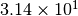. Because we only have 3 digits, the nearest larger number
that we can represent is obviously 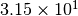. This number differs from
by one unit in the last place (ULP). Any real number  that is between and can at best be
represented with one of these two numbers. Let’s say is actually
that is between and can at best be
represented with one of these two numbers. Let’s say is actually  ; now
is best represented in our numbers as , and the
rounding error is 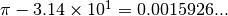 In the worst case, we
could have some real number 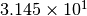 that will have rounding error
0.005. If we always choose the floating point number nearest to our real number
then the maximum rounding error occurs when is halfway between two
representable numbers; in that case the rounding error is 0.5 ULP.
; now
is best represented in our numbers as , and the
rounding error is 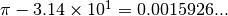 In the worst case, we
could have some real number 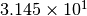 that will have rounding error
0.005. If we always choose the floating point number nearest to our real number
then the maximum rounding error occurs when is halfway between two
representable numbers; in that case the rounding error is 0.5 ULP.
We can generalize to floating point numbers of form:
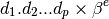
Where  is the number of digits in the significand,
is the number of digits in the significand,  is the base (10
in our example), and
is the base (10
in our example), and  is the exponent.
is the exponent.
The number is normalized if 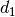 is not zero.
1 ULP corresponds to:
where there are 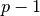 zeros in the significand. This is also:

Note that any normalized floating point number with exponent has the same
value for 1 ULP. Let’s define:
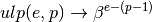
We can represent any real number  in normalized floating point format by
using an infinite significand:
in normalized floating point format by
using an infinite significand:
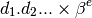
Again, normalized means that 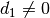. The ULP value for a real value
in some some finite floating point format is still 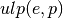 where is the
number of digits in the significand as above.
Absolute error¶
The IEEE standard for floating point specifies that the result of any floating point operation should be correct to within the rounding error of the resulting number. That is, it specifies that the maximum rounding error for an individual operation (add, multiply, subtract, divide) should be 0.5 ULP.
In practice it’s now very hard indeed to find a machine that does not implement this rule for floating point operations.
Imagine we have two finite floating point numbers  and
and  and we combine
them using one of the operators {+, -, *, /} in a perfect world at infinite
precision:
and we combine
them using one of the operators {+, -, *, /} in a perfect world at infinite
precision:
where  is one of the operators {+, -, *, /}. Let’s call the actual
finite precision number returned from this calculation 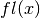. The IEEE
standard specifies that should be the closest number to that can be
represented in the finite precision format.
is one of the operators {+, -, *, /}. Let’s call the actual
finite precision number returned from this calculation 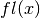. The IEEE
standard specifies that should be the closest number to that can be
represented in the finite precision format.
Let be the integer exponent of in normalized infinite floating point. If
we want to get for a particular number then we want
flr(logB(abs(x))) where logB is log to whatever base we are using (10 in
our example), and flr(y) gives us the largest integer i, such that i
<= y. So, 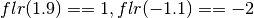.
We remember that is the number of digits in the significand in our finite
floating point format. The IEEE rule then becomes:
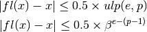
Relative error¶
The relative error is the rounding error divided by the infinite precision
real number :
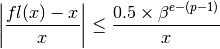
However, any value for that has some exponent has the same value for
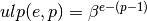. Let  be the largest digit in base ;
thus 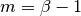. For example in base 10 (). The values
of between and 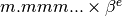 all have the
same value for 1 ULP = 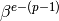. The relative rounding error will be
greater for smaller with the same exponent. Let:
be the largest digit in base ;
thus 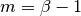. For example in base 10 (). The values
of between and 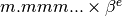 all have the
same value for 1 ULP = 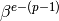. The relative rounding error will be
greater for smaller with the same exponent. Let:
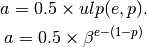
Make the smallest value with this exponent that has a large rounding error:
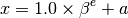
The relative rounding error  is:
is:
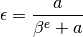
Because  is very small compared to :
is very small compared to :
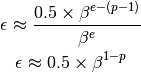
Now make the largest value with this exponent and that has a large rounding
error:
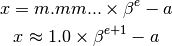
then:
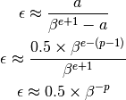
So, the maximum relative error for varies (depending on the value of )
between 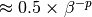 and 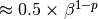.
Therefore the relative error for any (regardless of exponent) is bounded by
the larger of these two maxima:
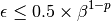
Machine epsilon¶
Now note that 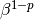 is the ULP for 1; that is where is 0. Some people refer to this value as machine
epsilon, others use that term for 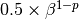 - see variant
definitions. MATLAB and Octave return from their eps()
function. numpy uses the same convention in its np.finfo function. For
example, the standard float64 double precision type in numpy has 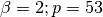:
>>> import numpy as np
>>> np.finfo(np.float64).eps == 2**(1-53)
True
Thanks to¶
Stefan van der Walt for several useful suggestions and corrections.